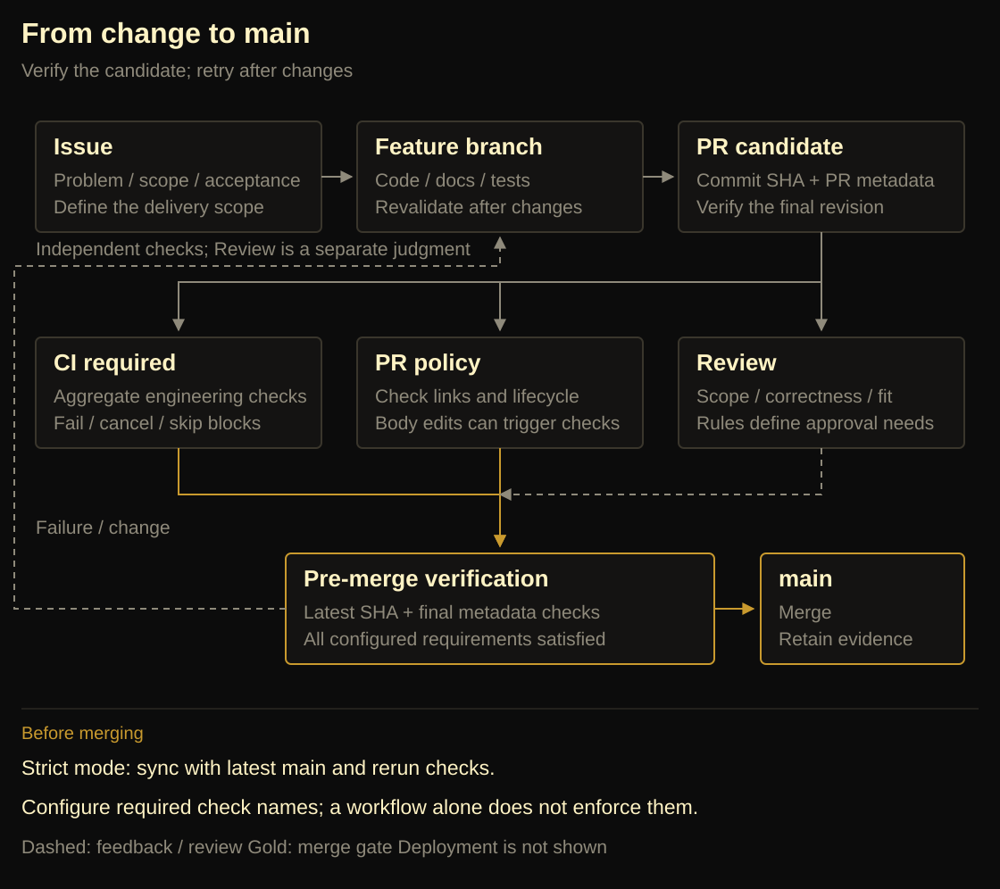

TL;DR
- Agent 加快了代码、文档和 PR 的产出，也增加了核对它们是否一致的工作；测试全绿只能证明已检查的条件。
- 我们把职责分开：AGENTS.md、Skills 和 Docs 指导执行者，脚本与 Workflow 产出检查证据，分支保护执行已配置的合并限制。
- 完成一次交付，需要核对最终提交、最后一次元数据修改及相应检查。文中失败与修复带有版本和时间边界，不代表当前线上状态或产品整体正确性。
让 Agent 参与开发以后，代码、测试、设计文档和 PR 都来得更快。我们原以为，给这些产物补齐检查，就能放心合并。
oh-my-quant 的几次失败推翻了这个判断。测试全绿，独立计算却能发现账本错误；实现已经修复，旧文档仍在指导下一轮修改；代码检查通过，PR 描述触发的新检查却还没结束。每一份产物都像是完成了，它们之间却对不上。
维护者的工作因此多了一层：确认需求、实现、验证和合并决定指向同一次交付。Agent 交出代码之后，我们还需要什么证据，才能说工作完成了？
这篇文章沿着这个问题展开：先复盘仓库里出现的失败，再解释我们如何分配 AGENTS.md、Skills、Docs 和 CI 的职责，最后检查修复留下的结果与成本。我们把这组实践称为 Agentic / Vibe Repo Ops。
文中的记录带有时间和版本，不能据此计算 Agent 的缺陷率或生产率；我们没有做这两项测量。
一、产出加速后，三个判断失灵了
691 项测试通过，账本仍然算错
2026-09-14 的一份核验记录里，项目测试有 691 项通过。同一轮独立回测探针却发现：零费用、本金 100000、买入 1000 股，价格从 100 到 100 再到 110，期末权益应为 110000，函数返回的却约为 111000。另一个先涨 10%、再跌 10% 的例子，累计收益约为 −1%，CAGR 却是 0。
这些是当时的失败观察，不是本文写作时重新运行的结果。后续修复与可重复输入进入了计算契约和独立账本测试。
问题不在于 691 这个数字不够大。已有断言没有覆盖正确的现金、仓位和年化口径，增加同类断言仍可能漏掉它们。
回答层也发生过类似的事情。2026-10-13，一份对冲回答通过了当时九项自动检查，却把市值 9240 相对成本 10000 的亏损写成 240、2.4%；正确结果应为 760、7.6%。单位、预算和期限检查通过，并没有顺带验证股票情景算术。原始样本属于内部运行材料，这里保留足以理解错误的输入，不把私有会话作为公开附件。
新闻回答的错误更隐蔽：引用格式合法，数字却取自另一段文字；工具说明复权口径未知，回答却将它确定地说成未复权价格。测试检查了格式与调用，读者信任的却是解释。
这使我们重新看待“通过”这个词。一个勾选只有带上它检查的对象和条件，才有意义。
文档留下了，当前设计却模糊了
我们最初倾向于保留材料。Agent 写下的方案、历史核验、阶段总结都有可能包含有用信息，立即删除似乎更容易丢失上下文。
但保留原稿没有自动保留正确的历史。一轮清理发现，两份被标为早期与最新的 GOALS，在统一换行、去掉首尾空白后内容完全相同；旧核验说明却声称后一份新增了刷新、分类和 slides。文件没有丢，关于文件关系的解释却错了。
另一类问题发生在实现修复之后。回测已经改为现金与仓位账本，并采用实际日历跨度，文档仍写着“初始名义本金且无现金约束”和统一的 252/N 年化简式。如果下一轮 Agent 依据旧规范改代码，修复过的错误就可能重新出现。
旧 Artifact 设计也曾提出独立 recorder、.traj.jsonl、DAG 和 replay，而当前实现从 session 分支派生轨迹。两套材料都写得详细，并不使它们同时成为现行设计。读者仍要猜：哪部分已经实现，哪部分只是曾经考虑过？
这些问题与“上下文不够长”并不等价。即使全部读到，如果没有区分材料的身份和有效期，更多上下文仍可能包含相互冲突的指令。当时的文档与制品复盘
PR 合并了，最后一轮检查还没结束
多个 PR 并行时，共享文档、目录入口与测试说明容易成为交叉修改点。文本冲突只是显眼的一种情况；同一功能被不同 PR 重复实现、架构计划尚未确定而实现位置先被固化，更需要评审发现。
还有一种冲突发生在时间上。2026-10-16，PR #22 的代码 CI 和一轮 policy 已经通过。随后修改 PR 描述，触发新一轮 policy。PR 在这轮检查结束前合并，关联 Issue 自动关闭。检查器稍后读到关闭的 Issue，又按“开放 PR 必须关联开放 Issue”的条件判定失败。原始失败运行
编辑描述、合并 PR、关闭 Issue 都是合理动作，错误发生在它们之间：检查器没有识别对象已经结束，合并流程也没有等待最后一次描述编辑触发的检查。
更早审计 main 时，GitHub API 返回 Branch not protected，rulesets 也是空的。仓库里已经有一个名为 CI required 的 job，却没有平台规则要求它成功后才能合并。命名表达了意图，设置并未实现这个意图。
WhyJ 分析：Agent 让我们更容易同时生成和修改多个产物，也让维护者更频繁地面对它们之间的关系。 这些故障并非 Agent 开发独有；在本仓库里，它们共同暴露了一个薄弱点：需求、实现、证据和合并决定之间缺少足够明确的对应关系。
二、把“完成”拆成可复查的责任
用 Issue 和 PR 固定交付范围
面对这些问题，一个自然反应是扩写 AGENTS.md，把所有教训都放进去。我们最终选择让入口保持简短，把需要不同执行者承担的事情分开。
首先约束交付单元：一份实现 Issue、一个主要功能模块、一个实现 PR。Issue 写清问题、允许修改的路径、非目标，以及可以观察的验收条件。PR 对应说明改变了什么，用什么证据支持完成。
“主要模块”不意味着只能修改一个目录。CI 的生命周期修复可能同时涉及 YAML、策略脚本、测试 fixture 和操作文档；为了满足目录数限制把它们拆散，反而会破坏同一问题的完整交付。我们希望限制的是语义范围，让评审者知道这次工作究竟承诺了什么。Issue Skill
这也改变了我们对评审的要求。评论应该指出具体触发条件、影响和修复目标。例如：两个标签页基于同一快照编辑不同项目，后提交可能覆盖前一个新增项目；这需要检查过期写入或更新粒度。让作者顺便替换框架、整理无关命名，只会扩大当前问题。
这类元数据写入风险来自固定版本的 PR 审查，不能因为本文引用它，就把它写成已经合入的产品修复。评审方法由 review-skill 维护；发现问题、实施修复与最终验证分别需要证据。
让规则找到执行者
我们按“谁真正执行这条规则”重新分配责任：
表 1 · 规则与职责
| 放在哪里 | 承担什么 | 本仓库中的例子 |
|---|---|---|
AGENTS.md | 稳定原则与知识入口 | 理解范围、保护已有改动、让结论对应验证 |
| 仓库 Skills | 特定任务的操作步骤与例外 | 完成 PR 描述后，再核对最后触发的检查 |
| 当前 Docs | 实现契约、命令与维护方法 | 数据口径、模块职责、CI 和发布操作 |
| 脚本与测试 | 可机械判定的条件 | 检查 Issue 引用、账本不变量、依赖边界 |
| GitHub Workflow | 调度事件、版本、环境和权限 | 哪个提交在 Linux、Windows 上执行什么 |
| 分支保护 | 接收合并时执行限制 | 必需检查通过，分支与 main 保持同步 |
| Blog | 解释为什么作出这些选择 | 失败反例、被推翻的判断、成本和重审条件 |
没有匹配的行，请修改关键词或重置。
这些层次彼此连接，但不能互相代替。Skill 说“等待 CI”不等于 GitHub 已阻止提前合并；YAML 跑了检查不等于它覆盖业务语义；模板里填了 Verification，也不等于作者真的验证了最终代码。

我们在 AGENTS 中保留原则与 Skill 索引，具体操作分别交给 issue-skill、pr-skill 和 review-skill。若确定性条件可以由脚本判断，就让脚本拒绝，而不是每轮依赖 Agent 重新理解同一段文字。仓库入口
这也有成本。“每个 PR 修改 docs Markdown”可以被路径检查强制，但脚本不能判断那句话有没有价值。为了通过检查而改一个标点，并没有补齐行为说明。因此文档门槛仍需要评审解释其相关性；普通小修也不需要强行产出一篇博客。
按读者任务合并文档
我们的第一次整理仍然保守：把旧稿汇成 13 份主题归档，再建一份设计决策账。入口看起来少了，但读者仍要在当前规范、历史汇编、决策账和博客之间拼出答案。阅读负担只是换了位置。
后来删除归档与决策账，把现行契约放回 Docs，把错误判断、修正理由和代价直接写进 Blog。继续检查才发现，research-、skill- 仍把一个生命周期拆在很多页里：任务 ID 一处要求必填，另一处已经允许首次声明由宿主补齐。只删除 archive 并没有解决重复规范。
那轮工作最终把 16 份相关文档收敛为 Harness、Skills、量化工具、数据源和 UI/UX 五个主入口，吸收并删除了其中 11 份。它减少了同一责任的重复解释，也让主文档变长、部分旧链接失效。这里能确认的是结构与冲突的变化，不能据此宣布读者理解速度提高。
第三方 Skill 的功能目录也遵循同样判断：上游维护功能介绍，我们维护采用的版本、安装与发现方式、本地装配边界。复制整个上游目录，会多出一份随时可能过期的说明。移除重复说明不等于移除运行依赖，用来复现错误的测试 Skill 夹具也不能顺手删掉。
代码中的辅助材料同样需要身份。开发脚本归所属模块的 dev，跨模块集成测试归根 tests，生产代码不能反向依赖这些入口。默认回归通过围栏检查后运行 src 与 tests；生成报告的演示用例使用显式入口，参考仓库的测试不混入默认集合。否则连一次失败是否属于产品回归，都需要临时猜测。测试入口与围栏
淘汰重复规范，保留失败证据
文档整理还需要另一条边界：设计应当更新，历史观察应当固定。
一份报告保存为 id@revision 后，应该继续呈现当时保存的 HTML、元数据与 provenance。原数据缺失就标记 unavailable，不能拿今天缓存中的相似曲线填回昨天的研究。恢复时核对源 entries、顺序、分支关系和内容指纹，也不能只凭“页面还能打开”就认定证据完整。Artifact 契约
但保存字节不意味着永远保留核验资格。修正 RSI 公式以后，如果旧报告不能按归档输入重现，就应该保留旧结果，同时撤销原来的 verified 判断。离线修改检查器后重读一份回答，也只能得到新的重审结论，不能把旧失败改写成一次新的模型成功。
这个区别同样适用于删除旧设计。我们放弃独立 recorder、复用 session 分支来派生轨迹，减少了两套记录的身份和顺序协调；代价是只能呈现实际捕获的事件，不能补出未记录的决策，也不承诺任意执行重放。真实的跨进程因果需求若超出当前表达能力，再重新考虑独立记录器。
旧方案里的独有约束还必须迁移。曾有一次摘要漏掉了采集限制：可审计事件与可展示的推理摘要，不等于模型底层隐藏思维链原文；新增采集器也不应收集系统提示、密钥和认证材料。这些约束需要保留，不能被当成现有报告已经完成全面过滤的证明。
完整研究报告仍可能包含用户原文、资金金额、内部路径和可见会话记录，应按私有材料处理。公开分享另从白名单数据构造，放弃完整会话与私人研究的可恢复性；研究完成也不意味着获得账户下单授权。报告保存、公开分享、真实执行，各自有单独的契约。完整报告部分图表还依赖 CDN，分享副本的本地 CSS/SVG 路径不能替它证明离线能力。报告与分享实现说明


这也是合并博客时最需要保住的东西：可以改变材料的组织方式，但不能补写不存在的需求、删掉独有约束，或者把历史失败润色成一条从未走错的路线。
三、让检查对准真正的失败
先检查失败发生在哪一层
开始排查 Actions 时，我们没有只盯着最新一个红灯，而是分页读取历史 runs，继续检查 jobs、steps、attempts 与可取得的 artifacts。2026-10-17 冻结的扩展快照有 61 次 run：35 成功、18 失败、8 取消，共 62 个 attempt。后续修复运行不混入这个分母。
多出来的 attempt 很关键。一次最终成功的 run，首次尝试其实因 Windows 取消测试失败。如果只查询最终状态为 failure 的运行，就会漏掉它。反过来，一个平台测试失败会让平台 job 与聚合门槛同时变红，也不能算成两个独立缺陷。
Actions outcomes
2026-10-17 · All 61 runs · Count
Source data
- Success
- 35 runs / 61 · 57.4%
- Failure
- 18 runs / 61 · 29.5%
- Cancelled
- 8 runs / 61 · 13.1%
- Counting unit
- 61 runs · 62 attempts · Frozen 2026-10-17
把取消保留在分母中，失败占比是 18/61，约 29.5%；只看成功或失败的运行，分母变为 53，占比约 34.0%。这两个数描述同一份快照，变化来自统计口径，不能解释为可靠性变差。图中没有把“失败 run”转换成“独立缺陷”，也没有据此估计修复后的提升。
这次审计逐渐把问题分成几类：真实产品行为错误、测试前提与环境不符、异步工作与清理竞态、策略版本或生命周期错误，以及工具链与安装阶段故障。同样是红灯，修复位置完全不同。
例如，多行粘贴时第二行不可见，是用户会遇到的产品问题；Linux 测试使用 C:\private-paper，是 fixture 误用了 Windows 路径；干净 Windows 上还没有卸载注册表根键，是安装验收前提需要处理。把它们统一称为 flaky，再统一增加等待时间，会抹掉最有价值的区别。产品失败、路径失败、安装前提失败
测试要有独立的判断依据
对账本错误，我们采用独立现金与股数计算生成预期值。在定义好的成交价格约定下，至少核对：
cash[t] = cash[t-1] - tradeShares[t] × price[t] - cost[t]
equity[t] = cash[t] + positionShares[t] × price[t]
如果期望值也调用被测函数生成，测试可能只是在确认函数与自己一致。这些不变量能检出一类算术错误，但真实成交、停牌、滑点与复权仍需要各自的条件。
样本也必须能区分错误实现。旧 RSI 在递推时重复消费播种期末变化，持续上涨时，新旧结果都可能是 100。换成收盘价 [10, 11, 12, 11, 10]、周期 2，正确末两项为 50、25，旧实现却为 100、50。再增加十个单调上涨样本，也不如这个转折样本有效。
A turn exposes the RSI bug
Reversal · Period 2 · Both series
LegacyCorrectBottom labels: close prices · Warm-up: N/A
[10, 11, 12, 13, 14] 是构造输入，用来说明单调上涨为何漏掉错误；不属于历史实测。Source data
- T1 · Close 10
- Legacy N/A · Correct N/A
- T2 · Close 11
- Legacy N/A · Correct N/A
- T3 · Close 12
- Legacy 100 · Correct 100
- T4 · Close 11
- Legacy 100 · Correct 50
- T5 · Close 10
- Legacy 50 · Correct 25
切换到上涨对照，两条线都停在 100，测试就无法区分这两种实现。切回转折，第四次观察已经出现差异：正确计算消费了新出现的下跌，旧结果仍滞后。选择反例的价值，在于让错误假设和正确行为产生可观察的不同，而不是单纯增加测试条数。
回答层则把已经观察到的错误变成有限检查：显式股数、成本和收盘价交给无 IO 的情景计算，再核对能识别的股票算术；评分通过贡献与合计检查，区分“原始分最高”和“加权贡献最大”。这些规则不会自动证明任意自然语言解释正确，更不核验完整期权策略。后续样本即使股票算术正确，仍可能作出缺少同条件报价的保费比较。持仓情景计算、有限回答检查
因此我们把确定性工程回归、真实服务样本、任务轨迹与回答主张核对分开理解。前一层通过，不能替后一层签字。真实服务的一次成功也只覆盖选定连接、权限和时间窗口，不代表长期可用。


Windows 超时暴露的是资源生命周期
有一项研究评测在约 5.4 秒时被测试框架终止，内部操作却默认允许 120 秒。外层开始删除目录、恢复环境时，内部 HTTP、归档和后续回答可能仍在运行，随后出现迟到断言或目录不存在错误。失败运行
把外层期限调大可以减少一次过早中断，却没有回答：如果下一次仍然超时，谁负责停止内部工作？
我们在测试 fixture 中显式持有 AbortController 和在途 Promise。清理时先禁止新工作进入，再发出取消，等待已有工作结算，然后停服务器、清定时器、恢复环境与删除临时目录。测试操作预算设为 10 秒，文件内测试预算 30 秒，清理预算 15 秒；这些是 fixture 的预算，没有修改生产评测默认值。修复后的测试
这里真正改变的是事件顺序：
结束测试 → 拒绝新任务 → 取消在途工作 → 等待退出 → 释放资源
abort() 发出信号，只能证明请求取消，不能证明再也没有回调。YTD 归档测试进一步说明，等待一个底层 saveBars 也可能不够，因为测试体随后还会创建另一份归档。清理需要等待完整的资源使用者结束。若 Promise 无限挂起，预算仍应报告失败，不能把“等待结算”写成 JavaScript 可以强制终止任意工作。归档测试
取消测试还有另一处错误：旧用例从命令启动开始计时，再要求取消小于 1000ms。Windows 上请求发出前的准备时间也被算进来，测试因此混合了启动耗时与取消行为。
新用例等服务器实际收到请求后才取消，并让正常响应停在一个受控关口。命令必须在响应尚未放行时结束，同时保留取消原因、没有成功结果、streaming 已停止等断言。外层期限用来发现挂死；取消语义由事件先后验证。如果产品忽略取消，命令就会一直等正常响应，测试仍然失败。取消回归
Doctor 的问题则来自机器环境。测试假设没有提示，隐含要求开发机已装好 Python/AKShare；另一项 handler 测试即使跳过网络，仍可能执行真实 Python 探针。前者需要显式构造缺依赖并检查结构化失败，后者使用已有依赖注入边界提供确定的就绪结果。测试应该声明它要的世界，而不是偶然继承维护者的电脑。入口回归、handler 失败运行
策略检查也必须对齐版本和状态
PR policy 曾两次报找不到 .github/scripts/pr-policy.mjs。工作流已经更新，但 checkout 使用旧 PR payload 里的 base.sha；那个提交早于脚本引入。结果是新工作流执行旧代码，两个版本在同一 job 中相遇。第一次失败、再次失败
只让一个 PR 同步 main 可以暂时避开问题，下一个旧 PR 还会再失败。修复落在事件与策略版本的对应关系上：该 pull_request_target 工作流使用事件的 github.sha 检出可信策略，并记录策略 SHA 与 PR head。
这个 job 只读取 PR 描述、文件和 Issue，不检出 PR head，不安装 PR 依赖，也不执行 PR 提供的脚本。权限限于 contents、issues、pull-requests 的 read，checkout 不持久保存凭证。贡献者提交的内容是检查输入，不能同时成为决定自己是否合格的可信检查器。策略工作流
这一选择依赖 GitHub 的事件语义，维护时仍要核对官方事件说明。不能把 target 工作流的 checkout 方式直接复制到普通代码测试，更不能把两种事件的权限边界混为一谈。
针对“合并后 Issue 关闭”的误报，策略增加了生命周期判断：开放 PR 的无效 Issue 仍然拒绝；PR 已关闭或合并则返回不适用；API 错误不能被当成成功。每轮校验前后重新读取 PR，若 body、head、base 或文件数变化，最多重试三轮；持续变化则明确失败，要求重检。策略脚本与回归
重新读取减少了旧快照误判，却没有让多次 REST 请求成为事务。最后一次读取之后 Issue 仍可能改变，当前工作流也没有覆盖所有 Issue-only 变化。因此我们没有宣称得到原子唯一性或完全一致的合并服务。
稳定快照上的机械条件也尽量具体：一个规范的关闭引用指向一个开放 Issue，正文包含 Outcome、Scope and Documentation、Acceptance、Verification、Visual Evidence、Risks and Rollback，存在非删除的 docs Markdown 改动，并检查其他开放 PR 是否已用可识别的关闭引用关联同一 Issue。它们能发现缺项与已知冲突，却不能证明范围合理、截图对应最终代码，或文档真的解释了行为变化。
操作流程也必须配合：先完成 PR 描述，再检查最后触发的运行。同一个 head 上，旧成功和新 pending 可以同时存在。“最终代码 SHA 通过过”仍不足以证明最终描述已经检查。PR Skill
四条工作流分别回答四个问题
我们保留四个 workflow，让代码回归、协作策略、安装包验收和真正发布有明确分工。
表 2 · 工作流与验证边界
| 工作流 | 触发与职责 | 结果的边界 |
|---|---|---|
CI | PR、main push、手动或复用调用；Linux/Windows 完整 release gate | 检查规定的代码、文档与打包入口 |
PR policy | PR 打开、编辑、同步等；读取可信策略 | 检查 Issue 引用、正文结构与 docs 改动，不裁定全部语义 |
Windows desktop | PR、main push、手动；构建并安装实际交付程序 | 检查指定 Windows runner 上的安装与交互 |
Publish npm | 手动输入 main 上的确切稳定版本，默认 dry-run | 分开发布预演与真实上传 |
没有匹配的行，请修改关键词或重置。
根 CI 固定 Bun 1.3.14，使用 Node 24 和 frozen lockfile，在 Linux、Windows 上运行类型、架构、策略、测试、CLI 构建与文档检查。Node 固定到主版本，并非所有工具都固定到补丁版本；第三方 Actions 当前也仍使用版本标签，不能把这套配置描述为所有依赖已经锁定到提交。
两个平台使用 fail-fast: false，让一个平台失败后，另一个仍有机会留下证据。执行输出写入日志，同时检查原命令退出码，避免日志管道掩盖失败。日志在结束时尝试上传并保留 14 天；没有文件就不能声称已经取得诊断。
随后对 npm 包做一次更接近使用者的检查：打包，安装到 checkout 外的临时目录，运行实际包中的 Node CLI，校验 JSON 版本。它能发现只在源码目录成立的入口假设，但 --version 成功仍不能证明所有真实行情、模型和 UI 功能可用。
最后，CI required 以 always() 执行，只接受矩阵结果为 success。failed、cancelled、skipped 都不能被聚合成成功。聚合器的意义在于给分支保护一个稳定名称，同时明确它到底依赖哪些检查。CI 实现
Desktop 曾只在较晚阶段暴露安装问题，因此我们把它放到所有 PR 上，包括只改文档的 PR。目前接受这笔成本，换取稳定报告的检查；以后若按路径裁剪，仍需设计一个始终返回结论的入口，避免必需检查永远 pending。PR 和 main 已有根 CI，Desktop 不再重复跑一份根检查；手动构建则复用完整 CI，真正发布依赖检查和安装验收两者成功。Desktop 实现
并发策略也按对象区分：同一 PR 的旧运行可以取消，main 和手动发布不因新运行主动取消在途任务。但 GitHub concurrency 不是持久化 FIFO 队列；cancel-in-progress: false 不能被理解为每个排队请求都会执行。若将来需要发布排队语义，需要单独设计。
发布权限只出现在需要写操作的 job。Desktop 发布检查 main、CLI/Desktop 稳定版本一致，上传验收过的安装包与 SHA-256；npm 发布复用 CI，以 OIDC Trusted Publishing 为目标配置，只给发布 job id-token: write。npm 的 prepublishOnly 还会再次执行生成与 release gate，带来重复验证成本。npm 发布实现
预演只证明执行了预演路径，不证明 npm 端的信任关系已经生效。构建得到 exe，也不证明所有用户机器的签名、杀毒与 Code Integrity 策略都会接受它。我们把这些保留为不同的验收阶段。
让 main 等待必需检查
配置分支保护时，需要填写的是稳定的检查名称，例如 CI required、PR policy，不是工作流标题 CI。保存以后还要重新读取平台设置，确认 required checks 中确实存在这些条目。仅仅在搜索框输入名称，并不代表已经添加。
Require branches to be up to date before merging 对应 strict 检查：要求分支与最新 main 对齐后再验收。它减少“分支自己通过，合在一起出错”的风险，代价是 main 更新后需要同步和重跑。前提是已经指定至少一个必需检查。GitHub 分支保护说明

示意流程，可逐步查看；不代表当前 GitHub 检查状态。静态原图保留在上方。

合并流程 · 无声演示查看一次改动如何经过 CI、PR 策略和最终核验。图 6 的示意录屏，非实时 Actions。收起视频
另外几个开关解决的是不同问题。签名提交验证提交来源与内容完整性，不能证明代码正确；线性历史禁止 merge commit，可配合 squash 让 main 上一条提交对应一个 PR，但不能保留完整的逐步调试结构；部署成功要求选定环境已经成功部署，前提是确实存在这样的部署流程；Lock branch 则使分支只读，不适合日常持续集成的 main。
在个人维护阶段，我们选择保留 PR、CI 和最新基线约束，没有强制另一位 reviewer 批准，也暂不要求 Agent 提交必须签名。这是在当前账号与维护成本下的取舍，不能解释为 Agent 无法签名。PR #39 曾因三个未签名提交而被拒绝合并，说明一项来源规则确实会独立于绿色 CI 生效；解除它不会自动解除其他规则。
对于线性历史，本文倾向短期 issue 分支配合 squash，让 main 上的变更与 PR 更容易对应。启用前要确认已有 PR 的依赖方式和合并习惯，尤其是堆叠分支；它也不能保证回滚无冲突。截至本文设置快照，该开关仍未开启。
合并后的分支清理同样不能只靠一句“删掉多余分支”。需要确认实际合入、没有依赖分支和未交付提交，再分别处理远端 ref 与本地 worktree；后者可能保存未入库的证据和私人数据。远端自动删除开关也不会代替本地清理。短期分支减少长期分叉，清理流程则负责保住尚未交付的工作。
四、修复的结果与维护成本
用故障注入检查修复
仅在维护者的快机器上重新通过，不能证明 Windows 的问题已经解决。我们为关键修复做了对照，也刻意破坏正确行为，检查测试是否还会拒绝。
表 3 · 故障注入与验证结果
| 对照输入 | 旧测试或错误实现 | 修改后的结果 |
|---|---|---|
| 请求进入 fixture 前增加 1100ms 准备时间 | 三条取消路由都因总耗时断言失败 | 三条路由通过；取消完成时正常响应仍未放行 |
| 临时副本不再向 handler 传取消信号 | 命令等待尚未放行的响应 | 新测试三条路由均失败，保留对取消失效的检出能力 |
| 每次归档 fixture 增加 5500ms 延迟 | 外层 5 秒先超时 | 新测试约 11.8 秒完成，原证据范围断言通过 |
| 保留慢归档，把外层期限故意缩为 1 秒 | 仍然制造测试超时 | 新清理等待工作结算，没有伴随 ENOENT 或迟到未处理错误 |
没有匹配的行，请修改关键词或重置。
这些对照使用临时验证副本，故意引入的错误没有进入生产代码。它们支持的是几个具体结论：启动耗时不会再冒充取消语义；正常取消仍必须发生；超时仍然会失败；清理顺序不再依赖正常路径恰好很快。它们不能证明所有异步竞态已经消失。
这也是我们现在判断测试修复时更看重的一点：减少误报以后，检查还是否保留拒绝真正错误的能力？ 只删除断言、吞掉异常或无限扩大期限，可能让图标变绿，却失去这项能力。
把结果绑定到版本
截至 2026-10-18 本文核对时，CI 与工作流修复 PR #41 已合入，main 为 cc9c935。合并后同一提交的根 CI和Windows Desktop均成功。这比“本地检查通过”多了一层真实平台证据。
但后续还有一个独立问题：Overview 恢复测试对比整个面板，真实时钟恰好从 17:15 跨到 17:16 时，只因刷新时间变化而失败。修复在 PR #42 中固定墙上时钟，显式跨越分钟边界，同时保留真实定时器和整块面板断言，避免通过忽略时间字段掩盖显示错误。原失败运行、修复 PR
该 PR 在核对时仍是 OPEN，head 为 1cdbcd1。其 CI 对合并候选 79abc16 报告 Windows 2686 项通过、Linux 2678 项通过及 8 项平台跳过，无失败；Desktop 运行与最终描述的 policy也成功。安装回执包含 11 项应用检查与 4 项安装器检查。这些是候选版本的结果，不能算成 main 已包含该修复。
分支保护的同一轮快照中，必需检查为 CI required 和 PR policy，strict 已开启，管理员也受约束。Desktop required 已有全 PR 工作流覆盖，但还没有加入必需列表；签名与线性历史均未强制。仓库也未启用合并后自动删除远端分支。因此，检查存在、检查通过、检查强制、分支已清理，是四件需要分别确认的事情。
Actions 的仓库默认 token 权限为 read，未允许工作流创建并批准 PR；允许使用的 Actions 范围仍为 all，也没有平台级的完整 SHA 固定要求。这说明最小写权限已经在默认设置和具体 job 中有所落实，第三方 Action 的来源约束却没有同时收紧。以后若调整，应该先盘点正在使用的 Action 与更新方式，而不是把一个开关的开启描述为整个供应链已经可信。
这里记录的是有时间边界的设置快照，后续应以平台实时状态为准。我们尚未完成一个故意失败、再尝试合并并确认被 CI 规则拒绝的完整受控验收，不能把配置读取当成所有拒绝路径都经过实测。
规则也有维护成本
现在，一些历史失败有了明确归属和可重复输入；策略与工作流版本对齐，开放与结束的 PR 分开处理；测试持有自己的异步工作，取消后等待退出；根 CI 与 Desktop 的职责更清楚，main 也有实际的必需检查。
这些变化没有让仓库变得零成本。跨平台完整检查与全 PR Desktop 构建增加运行时间；strict 要求跟随 main 重跑；固定失败样本与有限回答检查需要持续维护；文档合并会使主文档变长，也可能遗漏旧材料中不起眼但关键的约束。
因此，后续应该观察首次失败率、同版本重跑恢复率、修复后复发率、各阶段耗时，以及逃逸到 main 的缺陷。取消旧 PR 的运行需要单列，一个错误造成的多个聚合红灯需要去重。现在的样本规模、触发条件与检查集合都在变化，还不足以给出一个可信的“效率提升百分比”。
CI 之外也仍有空白。本次没有验证真实 npm 上传与 OIDC 授权，没有证明所有目标 Windows 机器都接受安装包，也没有重新执行全部真实模型与行情任务。仓库有 provider 检查命令，但没有据此建立定时运维探针；网络、权限、限流、缓存新鲜度仍是另一类运行问题。
后续可以单独设计只读、预算受控的 provider 探针，把缺凭证、权限拒绝、限流、空数据与陈旧缓存分开报告，再决定告警频率和接收者。这是待实施方案，不应在博客里提前写成持续监控已经上线。
WhyJ 分析：这轮实践改变了我们判断“完成”的方式。 代码、测试、文档和 PR 都是需要检查的产物；完成意味着某个明确范围的改变，在指定版本和环境里获得了足够证据，并通过真正执行的交付规则。它始终带有剩余未知。
一次失败之后，值得留下的也不只是一句“下次注意”。我们需要保留能重现它的输入，找到错误假设，把修复交给正确的责任层，再检查正常路径与错误路径。最后更新现行契约，让下一轮工作能够找到这个变化。
当 Agent 可以很快再写一份实现、再补一份解释时，这条从问题通往证据的路径，需要比产物本身更容易被找到。
读后小练习
读完可以做一个小练习：选一次自己仓库的历史失败，写出错误假设、责任层、可重复反例与拒绝错误的检查。再沿着实际命令追踪一次，确认这项检查究竟有没有成为交付条件。
References
-
Martin Fowler. Patterns for Managing Source Code Branches. MartinFowler.com, 2020.
优先读 Mainline、Healthy Branch 与 Integration Frequency，再决定分支模型。可以据此画出自己的 Issue → 分支 → PR → main → 发布关系，检查哪些地方仍在长期分叉。
-
GitHub. GitHub flow. GitHub Docs.
适合作为短期分支与 PR 工作流的起点；本地 worktree 与私人证据的清理仍需补充自己的规则。
-
Will Smythe and Lawrence Gripper. How GitHub uses merge queue to ship hundreds of changes every day. The GitHub Blog.
关注多个 PR 各自通过后，组合验证为何仍然必要。merge queue 是本仓库的未来选项，尚未启用；采用前需要确认资格、事件覆盖与构建成本。
-
OpenAI Codex. Workflow Strategy; blocking-ci.yml. GitHub source snapshot, commit
4eb4a65407d9.可借鉴：合并候选、可复用工作流、聚合器的
needs，以及合并前后的责任划分。边界：Rust/Bazel 矩阵与重检查后置策略；我们的安装错误有不同的逃逸成本。 -
DeepSeek Harness. CI reliability Skill; CI. GitHub source snapshot, commit
1517a4dbca0a.可借鉴：动态端口、临时目录、进程退出、取消与清理责任。边界：超时数字与聚合覆盖假设；该快照的
windows-coverage不在all checks passed依赖中。 -
ZCode. architecture-policy.yaml; architecture-governance. GitHub source snapshot, commit
aac4755666d0.可借鉴：明确管理范围、遗留 baseline、带理由的例外与依赖边界。边界：不能把它写成已核验的 Actions 范本；所读快照未见
.github，这里借鉴的是架构治理。 -
rhysd/actionlint. README. GitHub source snapshot, commit
011a6d15e749.可借鉴：在运行之前发现 YAML、表达式、matrix 和部分输入错误。边界：静态检查不能证明平台保护、异步清理或安装体验；本仓库尚未接入。
-
Anthropic Claude Code Action. Security. GitHub source snapshot, commit
f27be6b65a46.可借鉴：Issue/PR 事件接入 Agent 后的身份、token 与写权限边界。边界：不要把带写权限的 Agent 与当前只读 policy 当成同一种职责；本文没有引入该 Action。
-
Dave Farley. The Process, Technology & Practice of Continuous Delivery. InfoQ / QCon. Talk.
带着一个问题看：如果现在交付，哪一步仍依赖维护者的记忆？
-
Ken Mugrage. It's Not Continuous Delivery if You Can't Deploy Right Now. Agile India / InfoQ. Talk, 2018.
对照 build、安装和真实发布，找出最晚才获得反馈的那一段。
-
Barry Zhang. How We Build Effective Agents. AI Engineer. Talk; transcript.
关注何时需要 Agent 判断，何时应把步骤交给确定性工具。
-
Barry Zhang and Mahesh Murag. Don't Build Agents, Build Skills Instead. AI Engineer. Talk; transcript.
对照一次实际故障，考虑经验应该进入 Skill、脚本还是稳定原则。
-
Ryan Lopopolo. Harness engineering: leveraging Codex in an agent-first world. OpenAI, 2026-02-11.
可借鉴：让知识入口、工具与检查形成可执行的工作环境。
-
Anthropic. Effective harnesses for long-running agents. Anthropic Engineering, 2025-11-26.
可借鉴：跨会话的增量工作与交接产物。持久文件提供恢复线索，但下一轮仍需要主动读取并核对其有效性。
-
Anthropic. Equipping agents for the real world with Agent Skills. Anthropic Engineering, 2025-10-16.
可借鉴：把程序性知识组织为可复用操作；再区分哪些需要由脚本与检查强制执行。
-
Langfuse. Evaluating AI Agent Skills. Engineering blog.
把输入、轨迹、评分和迭代联系起来；引用这套思路不表示本仓库已经接入其服务。
-
Manus. Context Engineering for AI Agents: Lessons from Building Manus. Engineering blog.
看团队如何从实际选择出发，用缓存、工具和文件系统的具体机制解释经验；本文也参考这种从问题走向决策的写法。
-
Langfuse. How we use agents to review production infrastructure. Engineering blog.
对照数据来源、仓库内 Skills 与固定评审产物之间的关系，以及如何把一次漏检转化为 Skill 修改；这是一份外部实践，不是本仓库的实施记录。